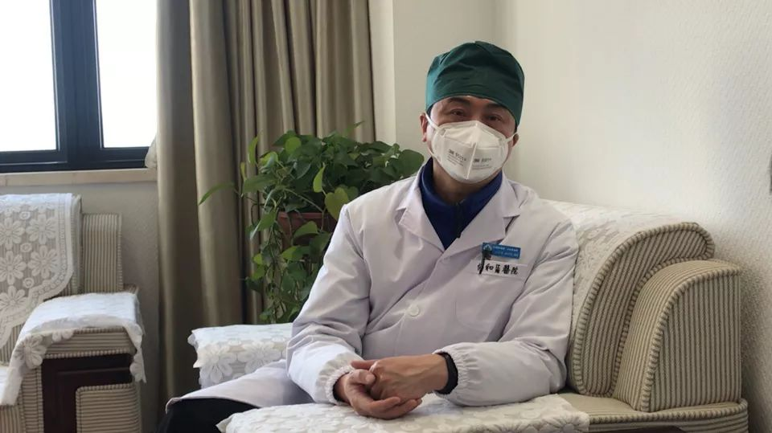
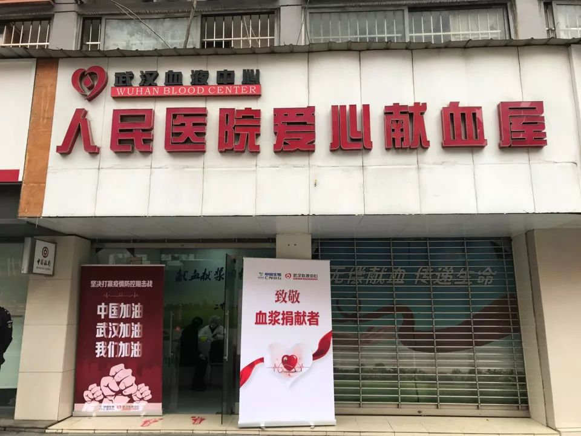

血浆抗体治疗投入新冠肺炎临床 专家：有效率在60%-90% - 经济观察网 － 专业财经新闻网站
原文链接 备份链接 经济观察网 记者 瞿依贤 2月13日晚间，中国医药集团下属公司中国生物宣布：在武汉地区实施了新冠肺炎康复者血浆采集，已成功制备出用于临床治疗的特免血浆，目前超过10名危重病人接受了新冠特免血浆治疗，患者接受治疗12 …


*************▲ *************江夏区第一人民医院(协和江南医院)副院长刘本德。 （南方周末记者 崔慧莹/图）
全文共3875字，阅读大约需要8分钟。
2020年2月19日公布的第六版诊疗方案提出“康复者血浆治疗”，适用于病情进展较快、重型和危重型患者。
“最佳的治疗方法，还是直接对付新冠病毒的特异性抗体和疫苗。”刘本德说。他们希望在输血治疗的过程中，找到好的病例，为寻找特异性抗体和疫苗的开发，打下基础。”
“理论上讲，血浆里有抗体，但每个人血液里有多少抗体还不一样，人类机体的免疫系统差别也很大，目前仅个别案例取得初步疗效，想证明效果，还需要更多证据。”
本文首发于南方周末 未经授权 不得转载
文 | 南方周末记者 崔慧莹
南方周末实习生 周嘉珺
责任编辑 | 汪韬
在武汉，至少有十几位新冠肺炎治愈者在看到招募信息后成功献血，他们此前从没想到，安静流淌在自己血管里的约五千毫升鲜血，携带有“抗体解药”，也许能治愈还在病痛中的患者。
2020年2月13日晚，金银潭医院院长张定宇在新闻发布会上，公开恳请康复患者“伸出胳膊，捐献宝贵血浆”。
据南方周末记者了解，与血浆治疗相关的临床试验及应用，已在武汉、上海、山西太原、江苏徐州等多地展开，全国至少有四十余位康复患者完成捐献，超百名符合条件的康复患者完成预约登记。
这一“古老”疗法给患者带来了新的希望，相关血制品概念股也集体上涨。但在临床医学、免疫学界，针对血浆治疗的效果及安全性，多位专家表达了审慎观望态度。
“输血是一把双刃剑，有风险。”新冠肺炎血浆疗法首倡者、江夏区第一人民医院(协和江南医院)副院长刘本德告诉南方周末记者，“在当前缺乏有效治疗方法的情况下，这是没有办法的办法，可以谨慎地通过回输康复者血浆的治疗来救急。”他所在的医院，已有7例患者输入了康复者的血浆。
“最佳的治疗方法，还是直接对付新冠病毒的特异性抗体和疫苗。”刘本德说。他们希望在输血治疗的过程中，找到好的病例，为寻找特异性抗体和疫苗的开发，打下基础。
1
刘本德整个春节都住在医院，不断有朋友找来，深夜打电话说“中招”确诊了，求他帮忙找床位住院，患者去世的消息也不断传来。对刘本德来说，陷入舆论争议、媒体关注的风暴，正是从2月13日晚发布会介绍这一疗法开始。
在刘本德看来，目前对危重症患者的抢救方式，包括呼吸机、人工肺ECMO、血液滤过等多种方法，“效果都不是很好”。比如ECMO对单纯的肺部病变治疗更有效，但新冠病毒攻击的靶器官太多了，既进攻肺，又进攻心脏，很多的患者死于严重的脓毒血症和心肌炎。
研发新药需要时间，但危重病人的病情，可能在数小时内急剧恶化，“我们的重症病区，1个患者要配4名护士，一方面随时监控患者的各项生命指标，另一方面患者的吃喝拉撒，都得由护士协助完成。”刘本德说。
血浆疗法是最后的武器之一，虽然扎进血管的瞬间就意味着患者要冒着排异的风险，但无论成败得失也要一拼。
早在1月20日，新冠肺炎康复者血浆采集项目就已启动。首批血浆来自江夏区中医院、江夏区第一人民医院的二十多名新冠病毒感染的医务人员，在康复后10天献血。
目前，在武汉市江夏区一共有9例患者接受血浆治疗，另有4例在金银潭医院。“我们医院的7例，没有发现一例输血浆后恶化，而且2月15日已有一例症状较轻的患者治愈出院。”刘本德说。
他强调，在江夏区第一人民医院，血浆治疗不是临床试验，在面对严重的感染，比如脓毒血症时，就有回输新鲜血浆的治疗方法。国家卫健委发布的《新型冠状病毒感染的肺炎诊疗方案》第四版中也已经正式提出，对重型、危重型病人治疗措施“可采用恢复期血浆治疗”。

江夏区第一人民医院。 （南方周末记者 崔慧莹/图）
这是一种历史悠久的疗法。早在十九世纪末就被发现对于治疗白喉和破伤风有效，在二十世纪上半叶被广泛用于治疗各种疾病，如麻疹、腮腺炎、肺炎等。直到抗生素、抗病毒药物和疫苗的发展和普及，血浆治疗逐渐退出了历史舞台。
在抗击其他传染病如SARS、H1N1、H5N1乃至埃博拉病毒的过程中，这一方法都被重启。
上海市公共卫生临床中心党委书记、国家卫健委专家组成员卢洪洲告诉南方周末记者，上海首例新冠肺炎康复者的血浆治疗临床研究于2月17日展开。
山西省已有4名康复者成功捐献血浆。山西医科大学第一医院呼吸科医生张新日此前接受媒体采访时表示，一名新冠肺炎危重患者在输入恢复期血浆后，肺部病灶明显好转。江苏徐州、广东清远各地也都已有成功献血案例。
不过，疗效是否归功于这一古老疗法，并不好说。2016年发表在《新英格兰医学杂志》的一项研究发现，接受500毫升恢复期血浆治疗，并未改善埃博拉病毒感染患者的生存率，这可能因为血浆抗体滴度较低，而高滴度抗体的血浆治疗仍有待研究。
2019年发表在《柳叶刀——呼吸病学》的一项临床研究显示，在治疗重症流感时，相比非免疫血浆，高滴度抗流感免疫血浆并无显著获益。
2
作为一线医生，刘本德很清楚，一个人的血浆对另外一个人体来说是异种蛋白，会有排斥反应。他看到有不少危重患者家属求助，在互联网上寻找相同血型的治愈者捐献血浆，但大多难有收获。从临床治疗角度看，合适的时机、合适的病人、合适的血浆，缺一不可。
首先，捐献血浆是“有门槛”的。
新型冠状病毒的确诊患者要遵从一般的献血条件——年龄在18-55周岁（适度放宽至60岁），女性体重在45公斤以上，男性体重在50公斤以上，没有高血压、糖尿病、心脑血管病等慢性病；
患者治愈后，还要休息1至2周以上，身体状况较好，没有其他不适等。血浆中的抗体，浓度越高越好，但每个捐献个体之间的差异较大。“一般情况下，患者在患病两个礼拜后抗体密度就会很高了。”卢洪洲告诉南方周末记者。
据《北京青年报》报道，江夏区第一人民医院首批献血的医护人员康复者中，血量标准为女性300毫升，男性400毫升，但有两位男同事都选择捐献了550毫升。
刚刚献完的血浆不能直接使用，需要被送往中国生物武汉生物制品研究所和中科院武汉病毒所，经过严格的血液生物安全性检测、病毒灭活和抗病毒活性检测等，再制备成“新冠特免血浆”，用于临床治疗。
至此，这一流程原来标准的时间是7天左右，非常时期能不能提前，“取决于上述单位的工作进度。”刘本德解释。
对于患者而言，一次输注约为200毫升，一位患者捐献的血浆可供1-2位患者使用。“一个病人只接受一个血浆捐献者的血浆，也是一项基本原则，因为患者接受的异种蛋白越少，风险就越低。”刘本德说。
根据目前的临床经验，血液疗法的对象以重症病人为主，上海市公共卫生临床中心提供的《新型冠状病毒感染者恢复期血浆治疗重症新型冠状病毒感染患者的临床研究（方案书）》显示，这是一项单臂、单中心研究，只有一个试验点，没有对照组。
目前，哪些患者在哪些情况下适用这一疗法，需要医生临床诊断来判断，没有统一指标。上述上海方案中纳入临床试验患者的标准，与当前诊疗方案中对重型、危重型病人的判定标准相同。
刘本德提醒，对于重症患者，最佳时期是在炎症风暴来临之前。炎症风暴是细胞因子对外界的病毒和感染的过度反应，无分敌我，造成了对自身的伤害。
“如果炎症风暴已经来了，再用血浆会加重病情。比如患者出现严重并发症、多脏器的衰竭。”刘本德解释。
临床医生要随时观察患者的指标，才能决定哪些患者适宜使用血浆疗法，什么时候输入血浆是安全的。
3
在武汉，康复者血浆捐献点共有3个。截至2月16日下午，武汉血液中心、人民医院爱心献血屋和金银潭医院捐献点，已有36名康复者献血成功（包括公开招募前献血的二十余位医护工作者）。

人民医院爱心献血屋。 （南方周末记者 崔慧莹/图）
献血需要带上医院的诊断书、出院小结和身份证，一位25岁的治愈者告诉南方周末记者，他2月13日出院，要休息到26日后，才能献血。
“还有20位符合条件捐献者已经预约，不断有热心者咨询。”国药集团中国生物技术股份有限公司相关工作人员告诉南方周末记者，他们负责人民医院、金银潭医院2个献血点。
武汉血液中心一位工作人员则表示，已有70位志愿者的信息登记在册，在评估筛选后，他们才会被通知捐献日期。武汉共计3460位患者治愈出院，目前来预约献血的约3%。
“有些病人出院后仍有心慌、胸闷的感觉，或惊魂未定，不愿意出来献血，或因为小区封闭交通不便。”刘本德分析了目前献血者较少的原因。治愈者血浆确实珍贵，但捐献者主观自愿，身体条件适宜，也很重要。
针对武汉当下严格的出行管制措施，献血处也做了相应的安排。武汉血液中心一位工作人员表示，如果献血志愿者有条件自行驾车前往，会为其协调办理小区通行证；若没有适合的交通工具，会安排接送 。
不过，交通并非最大的难题。当下最大的限制在于仪器和人力，每次血液采集需30分钟左右，目前一天最多可安排十个人捐献。
除湖北外，全国其他各省份虽尚没有大规模公开招募治愈者献血，但仍有患者在听闻消息后主动报名。2月14日, 上海市公共卫生临床中心28位新型冠状病毒感染肺炎患者康复出院，其中有6名愿意捐献血浆。
从抢购双黄连，到法匹拉韦、磷酸氯喹、瑞德西韦等药物被发现具有抗新型冠状病毒活性，再到血浆疗法呼吁治愈者献血，人们不愿放过治愈新冠肺炎的点点微光。
新冠病毒尤为狡猾。刘本德语气焦灼，连珠炮般列举：第一，它具有艾滋病毒的特点，可攻击人体的淋巴系统；第二，具备流感病毒的特点，传播性很快很强；第三，它具备消化道病毒的特点，钟南山院士团队在粪便中检出活菌；更可怕的是，有些健康带菌者没有发病，像乙肝病毒一样很隐蔽，无症状，但也是一个传染源。
截至2月17日下午，已有150个与新冠肺炎相关的临床试验在中国临床试验注册中心注册，中国医学科学院输血研究所申请的“采集恢复期血浆治疗重症新型冠状病毒肺炎(COVID-19)患者的研究”也在其中，有3家医院参与，对其疗效仍在探索阶段。
“理论上讲，血浆里有抗体，但每个人血液里有多少抗体还不一样，人类机体的免疫系统差别也很大，目前仅个别案例取得初步疗效，想证明效果，还需要更多证据。”广州支援武汉协和医院医疗队队长、广州医科大学附属第一医院副院长张挪富告诉南方周末记者。
在2013年上映的韩国电影《流感》中，医生金仁海把含有病毒抗体的血液注入女儿美日的身体里，最终遏制了猪流感病毒侵袭。而在现实中，恐难出现电影桥段中的“救世主”。无论是新药临床试验，还是疫苗研发，仍需等待时间。
戳击下面图片 继续阅读专题


原文链接 备份链接 经济观察网 记者 瞿依贤 2月13日晚间，中国医药集团下属公司中国生物宣布：在武汉地区实施了新冠肺炎康复者血浆采集，已成功制备出用于临床治疗的特免血浆，目前超过10名危重病人接受了新冠特免血浆治疗，患者接受治疗12 …
原文链接 备份链接 大范围推广仍需进一步临床试验的评估2月13日晚，在湖北省新冠疫情新闻发布会上，武汉市金银潭医院院长张定宇表示，康复后的患者体内有大量的中和抗体来抵抗新冠病毒。他呼吁康复期患者捐献血浆，共同拯救还在与病魔作斗争的病 …
原文链接 备份链接 记者：谢欣 编辑：许悦 “ 武汉金银潭医院院长张定宇对外表示，金银潭医院正在开展康复病人的恢复期血浆输注，目前也显示出一些初步效果，因为康复期患者体内有大量综合抗体来对抗病毒。 ” 2月13日晚，武汉金银潭医院院长张定 …
原文链接 备份链接 2 月 13 日晚间，国药中国生物宣布了一项重要进展，在新冠肺炎康复者血浆中已检测出高效价病毒中和抗体，实验证明，能够有效杀死新冠病毒，“我们用康复者特异血浆临床治疗 11 例危重病人，治疗效果显著。” 中国生物官方宣 …
原文链接 备份链接 湖北省新冠肺炎疫情防控指挥部13日21时召开新闻发布会，邀请中央指导组医疗救治组专家、北京朝阳医院副院长童朝晖、广州支援武汉协和医院医疗队队长、广州医科大学附属第一医院副院长张挪富、武汉金银潭医院院长张定宇等介绍武汉 …